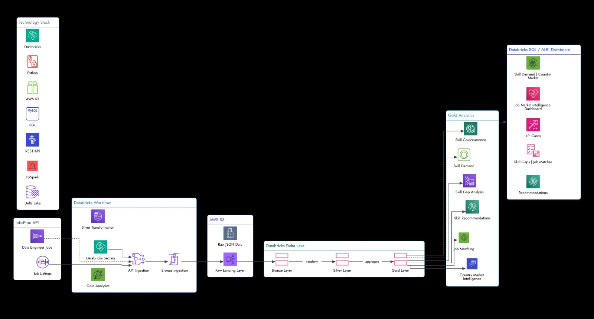
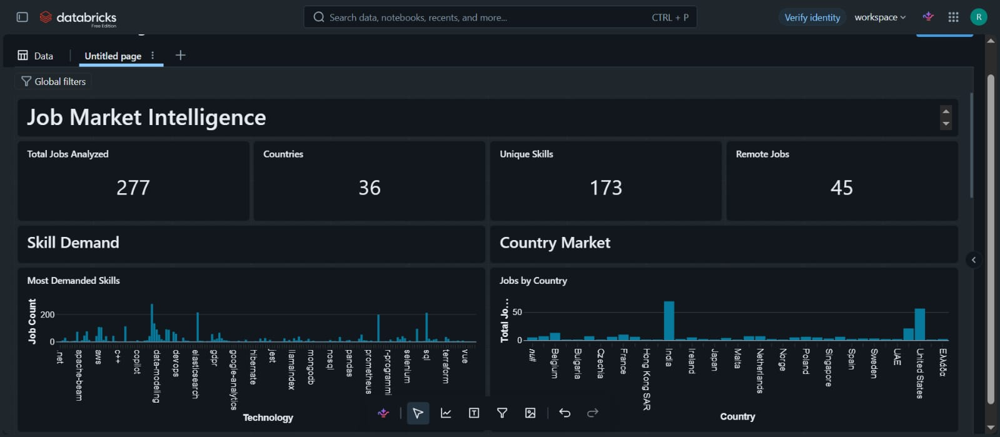
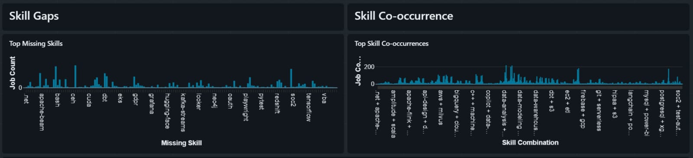
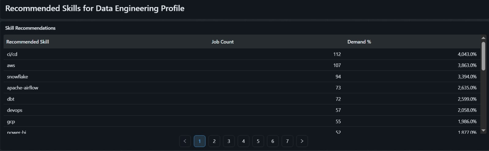
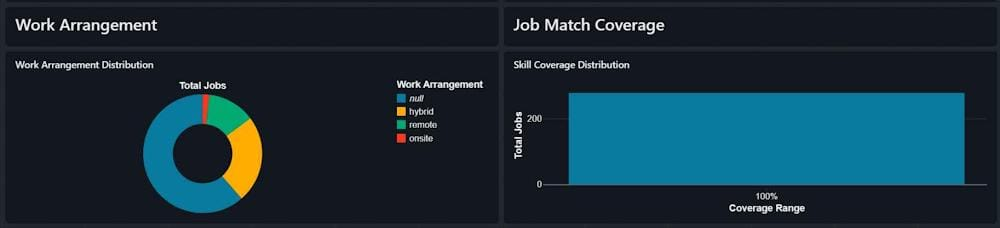

Featured Projects
Real engineering workflows focusing on reliability, data quality, and structured analytics.
Job Market Intelligence Platform
An end-to-end data pipeline processing job listings across multiple cities and landing them in a Medallion architecture for skill demand analytics.

Incremental Processing
The pipeline uses incremental loading to process new job data without rebuilding the entire dataset on every run.
Idempotent Reruns
MERGE-based upserts allow the pipeline to be rerun without creating duplicate records.
Fail-Fast API Handling
Non-success API responses raise exceptions and stop the workflow task rather than allowing incomplete data to continue downstream.
Data Quality Validation
Six validation categories check required fields, duplicates, salaries, timestamps, remote values, and country codes before analytics-ready data is produced.
Analytics Dashboard
Interactive Databricks AI/BI dashboards built from the Gold analytics layer to explore job-market trends, skill demand, and market patterns.




Weather Data Engineering Pipeline
Automated pipeline ingesting live weather data for 5 major cities in Pakistan, applying transformations, and preparing data for dashboard analytics.
View GitHub RepositoryOnline Grocery Management System
Final Year Project (Oct 2025 – Apr 2026). A full-stack grocery shopping application where customers can browse products, manage carts, place orders, and view purchases.
- Shopping cart & checkout
- Order management & history
- Admin inventory & sales reporting
About Me

Building Systems to Create Useful Information
I am a Data Engineer with experience building reliable data pipelines and analytics-ready systems. My work covers the full data engineering cycle from API-based data ingestion and cloud storage to data transformation, data quality validation, data modeling, and analytics.
I have hands-on experience with Python, SQL, PySpark, Databricks, AWS S3, and Delta Lake. My approach to data engineering is focused on designing and implementing workflows that are structured, maintainable, and capable of delivering clean and reliable data.
Beyond Data Engineering
Technology is a major part of what I do, but it is not the only thing I enjoy. I believe exploring different ideas creates a well-rounded perspective.
History
Cashier
Bonsaii Restaurant
Processed customer transactions accurately, handled cash and payment transactions, maintained transaction accuracy, and provided customer service in a fast-paced environment while following operational procedures.
Academics
Bachelor of Science in Computer Science
Virtual University of Pakistan
Engineering Notes
Practical lessons learned from building data pipelines and processing systems.
How I Made My Data Pipeline Idempotent
Discussing MERGE-based upserts and how safe reruns prevent duplicate records from polluting analytics tables.
Read Article →Bronze vs Silver vs Gold: Real Architecture
Moving beyond theory to explain the practical purpose and strict isolation of each layer in a Medallion architecture.
Read Article →